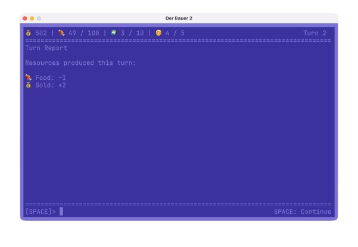
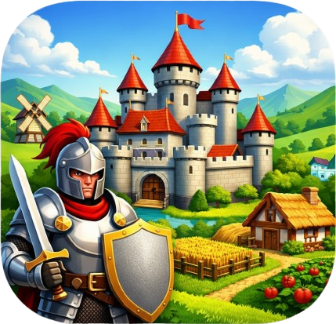

DerBauer2
From humble farms to Emperor — build, trade, and rule with heart and guile.
Manage farms and workshops, trade goods, research new technologies, recruit soldiers and
expand your realm. Make choices that shape your legend — build, trade, conquer, and charm your people.

